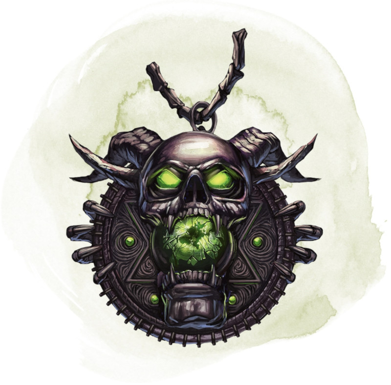

Talisman du mal absolu
Objet merveilleux, légendaire (nécessite un lien avec une créature d'alignement mauvais)
Cet objet symbolise le Mal impénitent. Une créature qui n'est ni d'alignement bon ni d'alignement mauvais subit 6d6 dégâts nécrotiques en touchant le talisman. Une créature bonne subit 8d6 dégâts nécrotiques en touchant le talisman. Chacune de ces catégories de créatures subit de nouveau ces dégâts chaque fois qu'elle termine son tour en tenant ou transportant le talisman.
Si vous êtes un clerc mauvais ou un paladin mauvais, vous pouvez utiliser le talisman comme symbole sacré, et vous bénéficiez d'un bonus de +2 à vos jets d'attaque avec un sort tant que vous tenez ou êtes équipé du talisman.
Le talisman possède 6 charges. Si vous le tenez ou en êtes équipé, vous pouvez utiliser une action pour dépenser une charge du talisman et choisir l'une des créatures sur le sol, que vous pouvez voir et dans un rayon de 36 mètres autour de vous. Si la cible est d'alignement bon, une crevasse embrasée s'ouvre sous ses pieds. La cible doit réussir un jet de sauvegarde de Sagesse DD 20 sous peine de tomber dans la crevasse et être détruite sans rien laisser derrière elle. Après cela la fissure se referme, ne laissant aucune trace de son existence. Lorsque vous dépensez la dernière charge, le talisman se dissout en un limon nauséabond et est détruit.
Si vous êtes un clerc mauvais ou un paladin mauvais, vous pouvez utiliser le talisman comme symbole sacré, et vous bénéficiez d'un bonus de +2 à vos jets d'attaque avec un sort tant que vous tenez ou êtes équipé du talisman.
Le talisman possède 6 charges. Si vous le tenez ou en êtes équipé, vous pouvez utiliser une action pour dépenser une charge du talisman et choisir l'une des créatures sur le sol, que vous pouvez voir et dans un rayon de 36 mètres autour de vous. Si la cible est d'alignement bon, une crevasse embrasée s'ouvre sous ses pieds. La cible doit réussir un jet de sauvegarde de Sagesse DD 20 sous peine de tomber dans la crevasse et être détruite sans rien laisser derrière elle. Après cela la fissure se referme, ne laissant aucune trace de son existence. Lorsque vous dépensez la dernière charge, le talisman se dissout en un limon nauséabond et est détruit.
Dungeon Master´s Guide (SRD)
